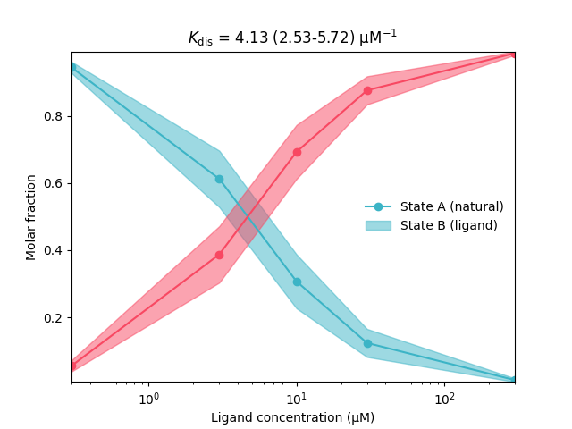
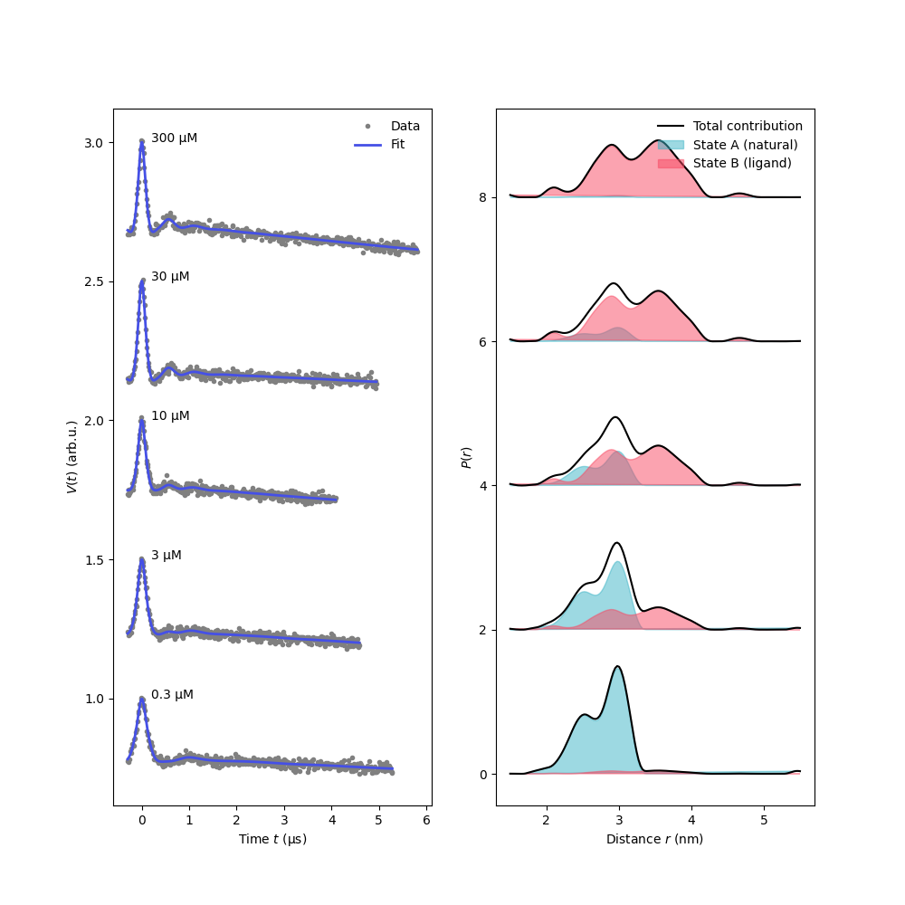

Note
Click here to download the full example code
Analyzing pseudo-titration (dose-response) curves with non-parametric distributions¶
How to fit a pseudo-titration curve to multiple DEER datsets, using non-parametric distance distributions.
In this example we will simulate a protein system in their states A (natural) and B (changed upon addition of a ligand L) given by the chemical equilibrium A + L <-> B.
import deerlab as dl
import matplotlib.pyplot as plt
import numpy as np
green = '#3cb4c6'
red = '#f84862'
violet = '#4550e6'
def chemicalequilibrium(Kdis,L):
"""Prepare equilibrium of type: A + L <-> B"""
Ctot = 1 # total protein concentration, µM
Kb = 1/Kdis
xB = np.roots(np.squeeze([Kb, -(Kb*L + Kb*Ctot + 1), Kb*L]))
xB = xB[(xB<=1) & (xB>=0)]
return xB
t1,V1 = np.load('../data/example_data_titration_1.npy')
t2,V2 = np.load('../data/example_data_titration_2.npy')
t3,V3 = np.load('../data/example_data_titration_3.npy')
t4,V4 = np.load('../data/example_data_titration_4.npy')
t5,V5 = np.load('../data/example_data_titration_5.npy')
ts = [t1,t2,t3,t4,t5]
Vs = [V1,V2,V3,V4,V5]
# Total ligand concentrations used in experiments
L = [0.3, 3, 10, 30, 300] # µM
# Distance vector
r = np.linspace(1.5,5.5,150)
# Construct a non-parametric distance distribution that is a
# linear combination of two non-parametric distributions
PAmodel = dl.freedist(r)
PBmodel = dl.freedist(r)
Pmodel = dl.lincombine(PAmodel,PBmodel,addweights=True)
# Construct the dipolar models of the individual signals
Vmodels = [dl.dipolarmodel(t,r,Pmodel) for t in ts]
# Create the global model
titrmodel = dl.merge(*Vmodels)
# Make the two components of the distance distriution global
titrmodel = dl.link(titrmodel,
reftime = [f'reftime_{n+1}' for n in range(len(Vs))],
P_1 = [f'P_1_{n+1}' for n in range(len(Vs))],
P_2 = [f'P_2_{n+1}' for n in range(len(Vs))]
)
titrmodel.reftime.set(par0=0, lb=-0.1, ub=0.2)
# Functionalize the chemical equilibrium model
titrmodel.addnonlinear('Kdis',lb=3,ub=7,par0=5,description='Dissociation constant')
titrmodel = dl.relate(titrmodel,
weight_2_1 = lambda weight_1_1: 1-weight_1_1, weight_1_1 = lambda Kdis: chemicalequilibrium(Kdis,L[0]),
weight_2_2 = lambda weight_1_2: 1-weight_1_2, weight_1_2 = lambda Kdis: chemicalequilibrium(Kdis,L[1]),
weight_2_3 = lambda weight_1_3: 1-weight_1_3, weight_1_3 = lambda Kdis: chemicalequilibrium(Kdis,L[2]),
weight_2_4 = lambda weight_1_4: 1-weight_1_4, weight_1_4 = lambda Kdis: chemicalequilibrium(Kdis,L[3]),
weight_2_5 = lambda weight_1_5: 1-weight_1_5, weight_1_5 = lambda Kdis: chemicalequilibrium(Kdis,L[4]))
# Impose compactness upon the combined shape of the distribution
Pshape = dl.lincombine(PAmodel,PBmodel)
compactness_penalty = dl.dipolarpenalty(Pshape,r,'compactness')
compactness_penalty.weight.set(ub=1e7)
compactness_penalty.weight.freeze(0.1) # Remove this line for automated optimization
# Fit the model to the data
results = dl.fit(titrmodel,Vs,regparam=0.3,weights=[1]*len(Vs),ftol=1e-4,penalties=compactness_penalty)
# Evaluate the dose-response curve at the fit with confidence bands
xAfcn = lambda Kdis: np.squeeze(np.array([1-chemicalequilibrium(Kdis,Ln) for Ln in L]))
xBfcn = lambda Kdis: np.squeeze(np.array([chemicalequilibrium(Kdis,Ln) for Ln in L]))
xAfit = xAfcn(results.Kdis)
xBfit = xBfcn(results.Kdis)
xAci = results.propagate(xAfcn,lb=np.zeros_like(L),ub=np.ones_like(L)).ci(95)
xBci = results.propagate(xBfcn,lb=np.zeros_like(L),ub=np.ones_like(L)).ci(95)
# Plot the dose-reponse curve
plt.plot(L,xAfit,'-o',color=green)
plt.fill_between(L,xAci[:,0],xAci[:,1],alpha=0.5,color=green)
plt.plot(L,xBfit,'-o',color=red)
plt.fill_between(L,xBci[:,0],xBci[:,1],alpha=0.5,color=red)
plt.xscale('log')
plt.xlabel('Ligand concentration (μM)')
plt.ylabel('Molar fraction')
plt.legend(['State A (natural)','State B (ligand)'],frameon=False,loc='best')
plt.title(r'$K_\mathrm{dis}$'+f' = {results.Kdis:.2f} ({results.KdisUncert.ci(95)[0]:.2f}-{results.KdisUncert.ci(95)[1]:.2f})'+' µM$^{-1}$')
plt.autoscale(enable=True, axis='both', tight=True)
plt.show()
# Plot the fitted signals and distance distributions
plt.figure(figsize=[10,10])
plt.subplot(121)
for n,(t,Vexp,Vfit) in enumerate(zip(ts,Vs,results.model)):
plt.plot(t,n/2 + Vexp,'.',color='grey')
plt.plot(t,n/2 + Vfit,color=violet,linewidth=2)
plt.text(0.2,n/2 + np.max(Vfit),f'{L[n]} µM')
plt.legend(['Data','Fit'],frameon=False,loc='best')
plt.xlabel('Time $t$ (μs)')
plt.ylabel('$V(t)$ (arb.u.)')
plt.subplot(122)
for n,(xA,xB) in enumerate(zip(xAfit,xBfit)):
Pfit = Pmodel(P_1=results.P_1,P_2=results.P_2,weight_1=xA,weight_2=xB)
Pfit /= np.trapz(Pfit,r)
if n>1: label=None
plt.plot(r,2*n + Pfit,'k',label='Total contribution' if n<1 else None)
plt.fill(r,2*n + xA*results.P_1,color=green,alpha=0.5,label='State A (natural)' if n<1 else None)
plt.fill(r,2*n + xB*results.P_2,color=red,alpha=0.5,label='State B (ligand)' if n<1 else None)
plt.legend(frameon=False,loc='best')
plt.ylabel('$P(r)$')
plt.xlabel('Distance $r$ (nm)')
plt.show()
# %%
- 
- 
Total running time of the script: ( 0 minutes 52.129 seconds)